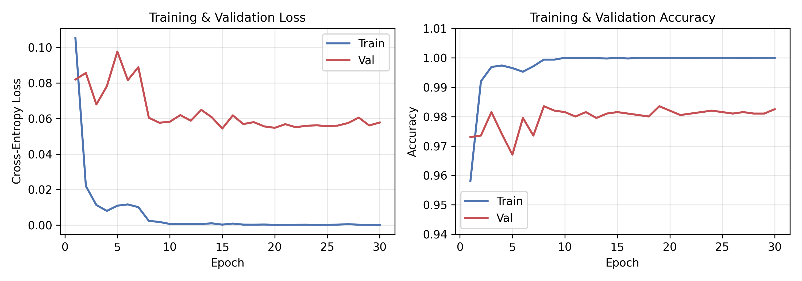
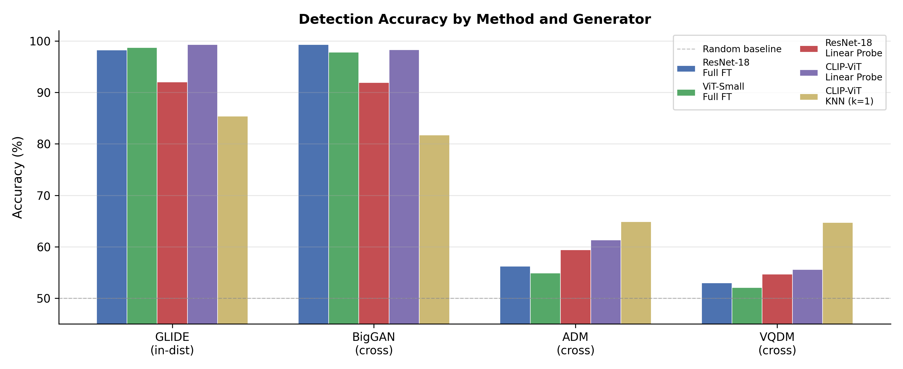
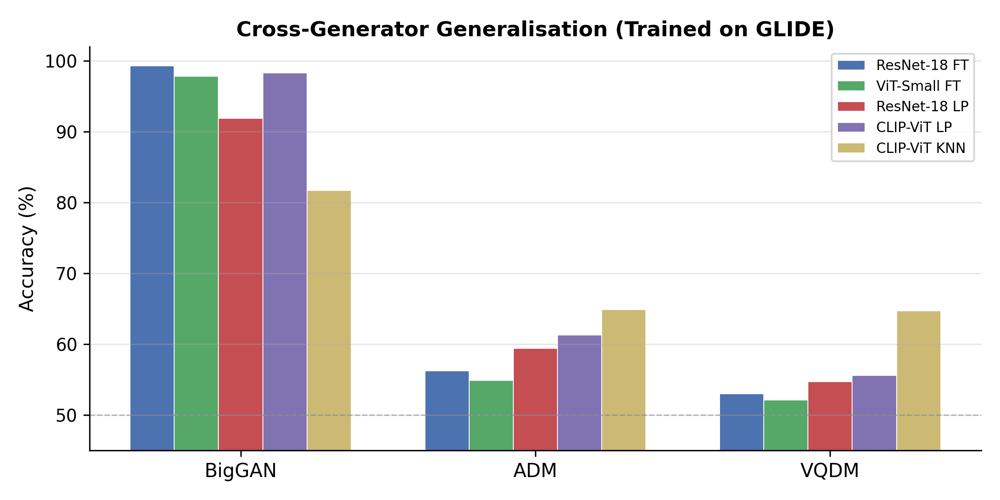

1. Overview
- Task: Distinguish AI-generated images (diffusion / GAN) from authentic photographs.
- Dataset: GenImage subset – GLIDE (train source), BigGAN / ADM / VQDM (cross-generator evaluation)
- Models: ResNet-18, ViT-Small, CLIP-ViT with multiple training strategies
- Environment: Python 3.12, PyTorch 2.6.0+cu124, RTX 4060 Laptop GPU
2. Dataset Preparation
2.1 Generators Downloaded
| Generator | Size | Images | Role |
|---|
| GLIDE | 1.2 GB | ~12,000 | Train |
| BigGAN | 934 MB | ~12,000 | Cross |
| ADM | 1.5 GB | ~12,000 | Cross |
| VQDM | 1.4 GB | ~12,000 | Cross |
2.2 Subset Split
| Subset | Source | Real | Fake | Total |
|---|
| train | GLIDE | 4,000 | 4,000 | 8,000 |
| val | GLIDE | 1,000 | 1,000 | 2,000 |
| test/glide | GLIDE | ~502 | 500 | ~1,002 |
| test/biggan | BigGAN | 500 | 500 | 1,000 |
| test/adm | ADM | 500 | 500 | 1,000 |
| test/vqdm | VQDM | 500 | 500 | 1,000 |
3. Methods
3.1 Architectures
| Backbone | Parameters | Pretrained |
|---|
| ResNet-18 | ~11 M | ImageNet-1K |
| ViT-Small (patch16_224) | ~22 M | ImageNet-21K (timm) |
| CLIP-ViT-B/32 | ~56 M | OpenAI CLIP (400M) |
3.2 Training Strategies
Full Finetune (FT)
Update all backbone + classifier parameters end-to-end.
Linear Probe (LP)
Freeze backbone; train only a single linear classification head.
KNN (k=1) (Ojha et al.)
Freeze backbone; classify by cosine nearest-neighbour against train memory bank.
3.3 Hyperparameters
| Hyperparameter | Full FT | Linear Probe |
|---|
| Epochs | 30 | 30 |
| Batch size | 64 | 32 (CLIP), 64 (others) |
| Optimizer | AdamW | AdamW |
| Learning Rate | 1e-4 | 1e-3 |
| Scheduler | ReduceLROnPlateau | same |
| Input size | 224 × 224 | 224 × 224 |
4.2 Full Metrics – Baseline (ResNet-18 Full FT)
| Test Set | Acc (%) | Prec (%) | Rec (%) | F1 | AUC |
|---|
| GLIDE (in-dist) | 98.21 | 97.83 | 98.61 | 98.22 | 99.8 |
| BigGAN (cross) | 99.30 | 100.00 | 98.60 | 99.30 | 99.8 |
Bold red: best per column.
4.3 Training Curves (ResNet-18 Full FT)

- Train loss converges to ~0 after epoch 5
- Val accuracy plateaus at ~98.5% from epoch 9
- Mild overfitting: train acc ~100% vs val acc ~98.5%
- Best Val Acc: 98.55% (epoch 23)
4.4 Patch-Level Analysis (ResNet-18, 3×3 Grid)
- Tested with 3×3 patch grid
- Each patch classified independently; final prediction by majority vote
- Mean consistency = fraction of patches agreeing with the majority vote
| Test Set | Accuracy (%)
(majority vote) | Mean Consistency (%)
(patch agreement) |
|---|
| GLIDE (in-dist) | 61.45 | 92.40 |
| BigGAN (cross) | 54.00 | 86.54 |
| ADM (cross) | 60.80 | 89.62 |
| VQDM (cross) | 61.80 | 89.62 |
4.5 Unsupervised Generator Clustering
(200 fake images per generator)
Pretrained ViT-Small
(no task adaptation)
Purity = 0.278 NMI = 0.003
→ 2×
Improvement
Fine-tuned ViT-Small
(full finetune checkpoint)
Purity = 0.559 NMI = 0.378
Fine-tuned Cluster Breakdown
| Cluster | GLIDE | BigGAN | ADM | VQDM | Dominant |
|---|
| 0 | 192 | 103 | 14 | 9 | GLIDE |
| 1 | 0 | 0 | 75 | 79 | Diffusion |
| 2 | 8 | 97 | 40 | 33 | BigGAN |
| 3 | 0 | 0 | 71 | 79 | Diffusion |
- Cluster 0 → dominated by GLIDE
- Clusters 1 + 3 → ADM/VQDM (diffusion family)
- Cluster 2 → BigGAN
- Task-oriented fine-tuning implicitly separates generator families without any generator-identity supervision.
4.6 Cross-Generalization Summary


Chance = 50%
5. Key Findings
✓1. Full Finetune Dominates In-Distribution and GAN
ResNet-18 and ViT-Small FT achieve ~98–99% on GLIDE and BigGAN, confirming strong generator-specific artifact learning.
✗2. All Methods Fail on ADM and VQDM
All detectors drop to 52–65% on ADM and VQDM — barely above random (50%), suggesting fundamentally different artifacts.
✓3. CLIP KNN Shows Better Generalization
CLIP-ViT KNN achieves 64.9%/64.7% on ADM/VQDM — the best of any method, supporting frozen vision-language features.
✓4. Linear Probe > KNN on Easy Generators
CLIP-ViT Linear Probe (99.3%/98.3%) outperforms KNN (85.4%/81.7%) with a learned linear boundary.
✓5. High Patch Consistency Despite Low Accuracy
~61% accuracy but ~90% consistency — patches agree even when wrong. Errors are systematic.
✓6. Fine-tuned Features Encode Generator Identity
K-Means on fine-tuned ViT-Small (Purity=0.559, NMI=0.378) outperforms pretrained (0.278/0.003) by 2×.
MoE Framework (Future Directions)
Three-component architecture validated by Findings 5 & 6:
1 GAN Expert
Fine-tuned CNN
Frequency-domain
spectral artifacts
→
2 Diffusion Expert
DIRE / FIRE-style
Reconstruction-error
detector
→
3 Universal Router
Trained on detection
features; routes by
generator family
Why This Matters
Detection-oriented supervision naturally organizes the feature space by generator family. This makes it possible to build a lightweight router that dispatches test images to specialized experts (GAN / Diffusion) without needing explicit generator labels.